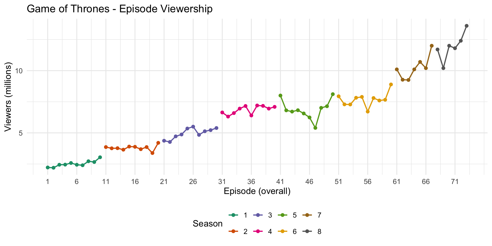
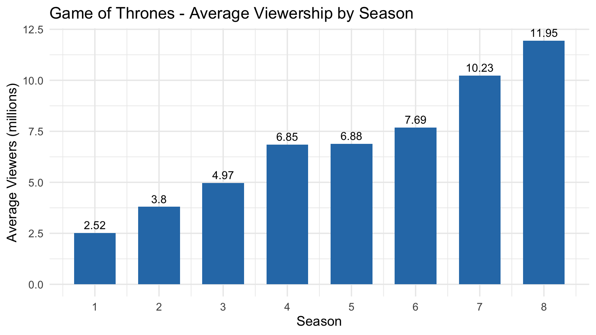

Game of Thrones is an American fantasy drama television series created by David Benioff and D. B. Weiss for HBO. It is the first adaptation of the A Song of Ice and Fire franchise, a series of high fantasy novels by George R. R. Martin, the first of which is A Game of Thrones. The show premiered on HBO in the United States on April 17, 2011, and concluded on May 19, 2019, with 73 episodes broadcast over 8 seasons.
Game of Thrones attracted a record viewership on HBO and has a broad, active, and international fan base. Many critics and publications have named the show one of the greatest television series of all time. Critics have praised the series for its acting, complex characters, story, scope, and production values, although its frequent use of nudity and violence (including sexual violence) generated controversy. The final season received significant criticism for its reduced length and creative decisions, with many considering it a disappointing conclusion. The series received 59 Primetime Emmy Awards, the most by a drama series, including Outstanding Drama Series in 2015, 2016, 2018 and 2019. Its other awards and nominations include three Hugo Awards for Best Dramatic Presentation, a Peabody Award, and five nominations for the Golden Globe Award for Best Television Series – Drama.
Game of Thrones title card. All contents and the picture were retrieved from Wikipedia.
Viewership Statistics
Season Summary Table
The table below summarizes the average, peak, and lowest US viewership (in millions) for each season, along with the change relative to the previous season.
season_avgs %>%mutate(change =ifelse(is.na(change), "—", paste0(ifelse(change >=0, "+", ""), change)) ) %>%kable(col.names =c("Season", "Episodes", "Avg. Viewers","Peak", "Lowest", "Change vs. Prev."),align ="cccccc",caption ="US viewership by season (in millions of viewers)" )
Table 1: US viewership by season (in millions of viewers)
Season
Episodes
Avg. Viewers
Peak
Lowest
Change vs. Prev.
1
10
2.52
3.04
2.20
—
2
10
3.80
4.20
3.38
+1.28
3
10
4.97
5.50
4.27
+1.17
4
10
6.85
7.20
6.31
+1.88
5
10
6.88
8.11
5.40
+0.03
6
10
7.69
8.89
6.71
+0.81
7
7
10.23
12.00
9.25
+2.54
8
6
11.95
13.60
10.20
+1.72
Viewership Over Time
Episode-by-episode viewership
The chart below shows the viewership (in millions) for every episode across all 8 seasons. Each season is shown in a distinct color.
ggplot(episodes, aes(x = ep_overall, y = viewers, colour =factor(season))) +geom_line(linewidth =0.8) +geom_point(size =1.8) +scale_colour_brewer(palette ="Dark2", name ="Season") +scale_x_continuous(breaks =seq(1, max(episodes$ep_overall), by =5)) +labs(x ="Episode (overall)",y ="Viewers (millions)",title ="Game of Thrones - Episode Viewership" ) +theme_minimal(base_size =13) +theme(legend.position ="bottom")

Figure 1: Episode-by-episode US viewership of Game of Thrones (millions)
Season-average viewership
ggplot(season_avgs, aes(x = season, y = avg_viewers)) +geom_col(fill ="#2c7bb6", width =0.65) +geom_text(aes(label = avg_viewers), vjust =-0.5, size =3.8) +scale_x_continuous(breaks =1:n_seasons) +labs(x ="Season",y ="Average Viewers (millions)",title ="Game of Thrones - Average Viewership by Season" ) +theme_minimal(base_size =13)

Figure 2: Average US viewership per season of Game of Thrones (millions)
Season-to-Season Changes
Change in average viewership relative to the previous season
The chart below highlights how much average viewership grew or declined between consecutive seasons.
Figure 3: Season-over-season change in average viewership (millions)
Observations
Game of Thrones showed remarkable viewership growth throughout most of its run. The show launched with an average of 2.52 million viewers in Season 1 and grew steadily, afterwards reaching a peak season average of 11.95 million viewers in Season 8.
The single largest season-over-season jump occurred between Seasons 6 and 7 where average viewership increased by 2.54 million viewers. The most-watched episode of the entire series attracted 13.6 million viewers (“The Iron Throne”, Season 8), which is the recorded highest single-episode viewership in the show’s history. It reflects the massive audience drawn in by the series finale.
Overall, from Season 1 to Season 8, the average viewership grew by 9.43 million viewers and it made Game of Thrones be one of the most successful television series in terms of audience growth and retention.